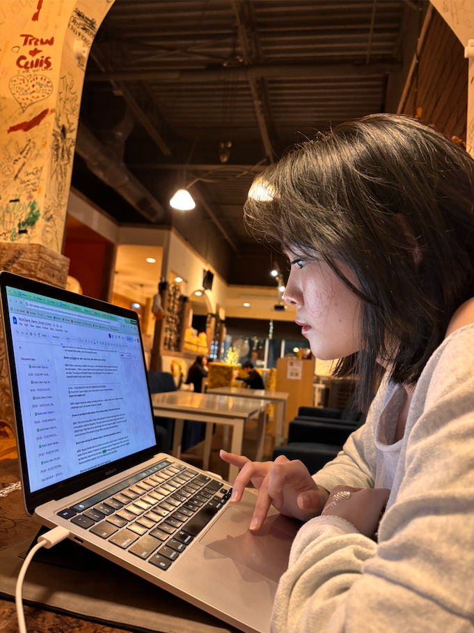

images/ch4-eva.jpg
내가 생각하는 우리 박은비 씨는 참 복잡하고 신기한 사람이야. 일단 먼저 나와의 많은 것들이 달라서 호기심이 갔었던 것 같아. 그리고 내가 지금까지 봤었던 사람 중에서 가장 바쁜 사람이기도 하고. 지금까지 너를 봤었던 모든 날 중 너가 안 바쁜 날이 없었던 것 같아. 진짜 내가 이민 올 때도 저렇게까진 안 바빴던 것 같은데, 너는 진짜 제일 바쁜 사람이야.
너가 ADHD가 있다고도 했고. 근데 나는 너가 ADHD가 있다고 생각 안 할 거야. 난 널 똑같이 대할 거야. 너는 그냥 너야, 나한테. 우당탕탕 실수도 하고 잘 까먹기도 하고 잘 많이 놓치기도 하는 그런 사람인 너가 그걸 창피하게 숨기지 않고 노력해가려고 하는 너가 너무 멋있더라.
너는 너 스스로를 조금 저평가하지만 내가 보는 너는 많이 다른 것 같아. 이건 내가 너를 좋아해서만 이 아니라 그냥 하나의 친구, 사람으로서, 내가 참 너한테서 배울 수 있는 게 많은 것 같아. 너한테 부러운 것도 너무나도 많고. 확실히 서로가 남의 것들을 다 부러워하는 것 같아….

images/ch4-eunbi2.jpg
그래서 내가 생각하는 은비는 열심히 노력하는, 많이 까먹어도 다시 안 까먹으려고 노력하는 그런 항상 노력하는 멋진 사람이야. 완벽하지 않아도, 오히려 완벽에 전혀 가깝지 않아도 너는 항상 최선을 다해. 포기하지 않는 것도 하나의 능력이야. 그렇게 힘든 것들이 많았는데… 교통사고, 전 남자친구와의 헤어짐, 그동안 놓친 수업들, 한국어 교사, "보바" 리스타, 참 힘들고 바쁜 게 그렇게 많았는데 포기할 수도 있는 것들이 많았는데, 이걸 다 좋게 하진 못했어도 어떻게 이렇게까지 한 게 중요한 거야.
내가 너에게 맞는 형용사를 계속 찾고 있었는데, 알맞은 단어가 없는 것 같아. 그래서 이렇게 마무리할래:
내가 생각하는 은비는 "박은비"다.
그냥 박은비라는 게 이젠 나에겐 하나의 단어고 형용사야.
그리고 이런 박은비라는 사람이 이젠 정말 좋은 것 같아…

images/ch4-end.jpg